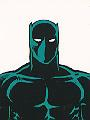

|
Introduction
Comics
Information
Allies
Villains
Animated Series
Movies
Photo Gallery
Video Games
As A
Whole
|
Allies of

Black Panther
Black Widow
Spiderman
|
 |
Black Panther
Real Name: T'Challa
AKA: Luke Charles, The Black Leopard
Height: 6'0" (183cm); Weight: 200 lbs. (91 kg.)
Hair: black; Eyes: brown
First appearance: Fantastic Four #52 (Jul 1966)
Creator(s): Stan Lee/Jack Kirby |
Known relatives: T'Chaka (father, deceased);
Ramonda (mother); Bashenga (first Black Panther, ancestor, deceased);
Jakarra (half-brother); Azzari the Wise (grandfather, deceased); Khanata,
Joshua Itobo, Ishanta, Zuni (cousins)
Occupation: monarch of Wakanda, scientist, former schoolteacher
Powers/abilities: acute senses (especially night vision and
smell), genius in physics and technology, extraordinary fighting
capability
Special equipment: none
Source of powers: sacred Wakandan herbs, Wakandan Panther God,
and lots of practice
Important allies: Capt. America, Fantastic Four, Daredevil, Iron
Man, Avengers
Important enemies: Klaw, Erik Killmonger, Jakarra
While DD and T'Challa don't
meet too often, they seem to be good friends and have a lot of respect
for each other. The Panther was actually the first hero to figure out
DD's identity for sure (Spidey thought he knew even earlier, but then
thought he was wrong). And shortly after, he let Matt know that he knew
and revealed his own identity. In fact, at one point when a news
broadcaster in San Francisco postulated on the air that DD and Murdock
were one in the same, T'Challa took on a bad guy in DD's duds while Matt
was also there to preserve Matt's identity. The two occasionally call on
one another for favors, and due to their similar lack of super powers
and their similar skills in gymnastics and unarmed combat, I find that
the artists who draw one well seem to draw both well. There's even been
a number of occasions on dark nights or in dark alleys where Panther's
ears and Devil's horns are confused and people mistake one for the
other. |
|
|
Black Widow
Real Name: Natalia Alianovna Romanova
AKA: Natasha Romanoff; formerly: Nancy Rushman, Laura Matthers,
Oktober
Height: 5'7" (170cm ); Weight: 131 lbs. (60 kg.)
Hair: red (formerly dyed black); Eyes: blue
First appearance: Tales of Suspense #52 (??? ????)
Creator(s): Stan Lee/Don Heck (possibly some input from Jack
Kirby?)
Other sources have told me: Don Heck and Don Rico (aka N.Korok) |
Known relatives: Alexi Shostakov (Red Guardian,
husband, deceased)
Occupation: spy, adventurer, former ballerina
Powers/abilities: skilled in espionage, unarmed combat,
acrobatics
Special equipment: widow's bite (in wrist bands), microsuction
cups in suit to enable scaling of vertical surfaces, widow's line (cable
to swing by, also in wrist bands)
Source of powers: not applicable
Important allies: Ivan Petrovich, Avengers, Daredevil, Nick Fury,
SHIELD, Spider-Man, Champions, Wolverine
Important enemies: Viper, Silver Samurai, Bullseye, the Hand,
HYDRA, the KGB
The Black Widow has the unique
distinction of being the only super hero that DD "teamed up with" for an
extended period of time. From issues in the early #80s through the early
#120s, DD & the Black Widow were a team operating out of San Francisco
(also the only time DD has operated from somewhere other than New York
for an extended period). While there was also a love interest during
most of that time, it seems that on Matt's side it may have just been
something of a rebound from his relationship with Karen Page. The
writers at the time also had Matt treating Natasha rather
chauvenistically. Since that time, while the Black Widow has
occasionally made it clear that she still feels some affection for Matt,
and although Matt has made it equally clear that he wants to remain
simply friends, Matt also treats her as an equal now rather than a
sidekick whom he must watch out for. While the love angle seems out of
the picture, they both hold each other in high regard, both personally
and professionally.
They occasionally work out or
help each other on missions, and there seems to be a natural flow
between them that DD doesn't seem to find with anyone else although he
comes close sometimes with the Black Panther or Spidey. There is an
interesting multi-page workout in DD #121 where DD and the Widow spar
with no pulled punches.
Among Natasha's personal
accomplishments, in addition to being one of the best spies in the
world, she was a member of the Bolshoi ballet, and had made the soviet
olympic gymnastics team before defecting to America. Not always, but
nearly so, the Widow is accompanied by her chauffeur and father figure
Ivan Petrovich.
Click
here for an in-depth look at the Black Widow's relationship
with DD by Loren Freid. |
|
|
Spider-Man
Real Name: Peter Parker
AKA:
Height: 5'10" (178 cm); Weight: 165 lbs. (75 kg.)
Hair: brown; Eyes: hazel
First appearance: Amazing Fantasy #15 (Aug 1962)
Creator(s): Stan Lee/Steve Ditko
(possibly some input from Jack Kirby...some also credit Joe Simon and CC
Beck with some input) |
|
Known relatives: Mary Jane Watson (wife); Mary
Parker (mother, deceased); Richard Parker (father, deceased); Ben Parker
(uncle, deceased); May Parker (aunt); Philip Watson (father-in-law);
Gayle Watson-Byrnes (sister-in-law); Tommy Byrnes, Kevin Byrnes
(nephews)
Occupation: freelance photographer
Powers/abilities: proportional strength, speed, agility, etc. of
a spider, "spider-sense"
Special equipment: web-shooters, spider-tracers
Source of powers: bitten by radioactive spider
Important allies: Human Torch, Daredevil, Black Cat
Important enemies: Chameleon, Doctor Octopus, Electro, Hobgoblin,
Kingpin, Kraven, Lizard, Mysterio, Scorpion, Venom, Vulture
Everyone knows that Peter
Parker gained his powers after being bitten by a radioactive spider. And
while both heroes gained their powers due to radioactivity, that's the
extent of the similarity between the 2 characters. People often compare
the two, or even call DD a "weaker" Spider-Man, but real DD or Spidey
fans will tell you most adamantly that the 2 characters are VERY
different. This is easy to see if you remember their alter-egos. Matt
Murdock is a little older, a little more reserved, more likely to look
at various sides of situations, and very concerned with overall
pictures. Peter Parker is younger, more impulsive, often sees things as
being more black and white. There's even been some animosity between
them in the past as DD has been more willing to compromise in situations
to attain the "greater good" whereas Spidey is more idealistic.
And while they both do a lot
of swinging to get around and both have great reflexes and agility,
their powers are quite different as well. Spidey tends to rely more on
his strength and webs, whereas DD uses his billy club and fighting
skills to a greater extent. Spidey relies on his "Spider-sense" to warn
him of danger, but Daredevil has to constantly survey his senses,
processing the information, and checking his memory to watch for danger
or evaluate situations.
Comparisons/differences/similarities
aside, when these two get together it's ALWAYS a good issue. For some
reason the best in both characters comes out when they help each other
out. Possibly because the writers and artists enjoy the two of them
together so much. One of my favorite scenes is when Spidey and DD are
having a scuffle and Spidey shoots webs over DD's eyes and then smacks
himself in the forehead ("Doh!") as he realizes how useless that was.
|
RETURN TO DAREDEVIL'S INTRODUCTION PAGE
|